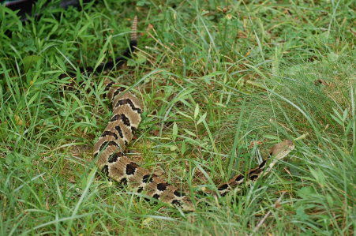
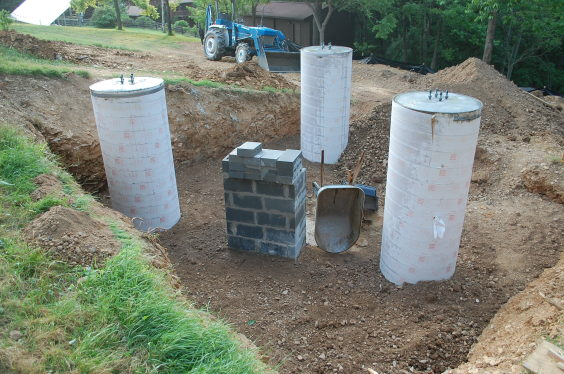
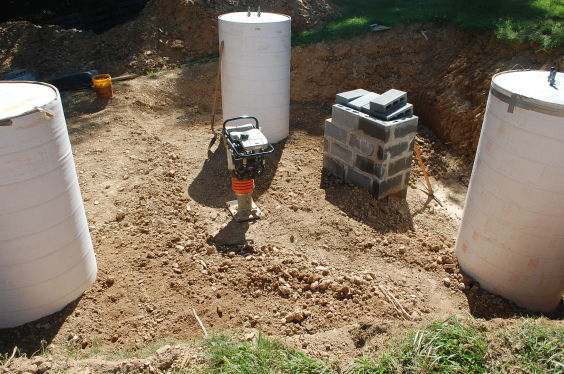
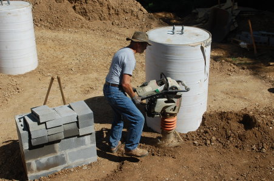
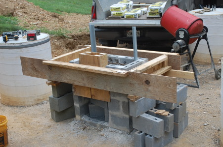
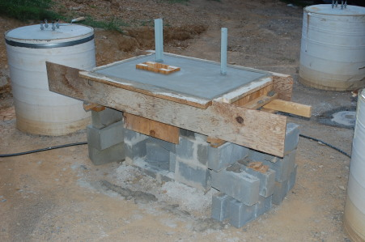
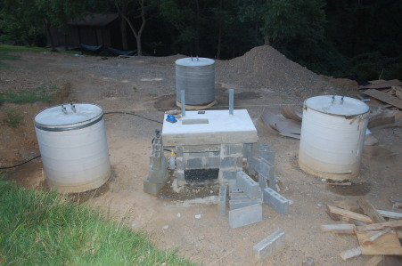
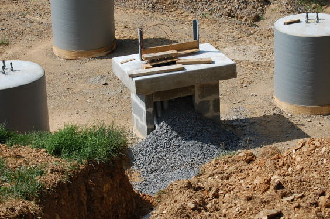
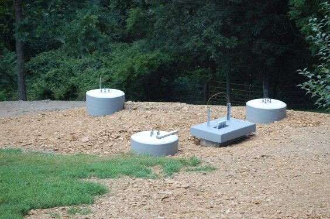
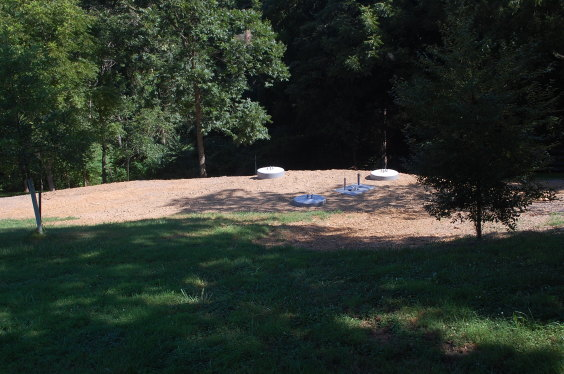

|
Home About VSI What We Do Who We Are Contact Info Resources Blog Data Archives Export |
Tower ConstructionTower Foundation BackfillGroundbreakingBackfilling the foundation was very labor intensive. In addition to backfilling the soil removed during the initial excavation, we ended up trucking in nine loads of screened fill. Each load was twenty tons, totaling 180 tons.One significent advantage of the screened backfill is that it compacted very nicely. The foundation design assumes a minimum weight of soil on top of the buried concrete mat; we exceeded that by at least 100%.
Wildlife While clearing up the plywood and lumber scraps left over in preparation for the screened backfill and tamping, I heard a rattle from the grassy area I was about to walk on. It was rattlesnake, the first live one we've see on our property in the nearly thirty years we've lived here (copperheads and non-poisonous snakes are far more common).It took its leisurely time crawling the entire length of the silt fence (which I wanted to remove) before finally slithering back to the woods. The good news is that it was quick to let me know when I was getting too close. PedestalBefore starting the backfill I made a pedestal for the electrical cabinet. The cabinet is heavy (a hundred pounds or so assembled) and will be sitting on seven feet of fill; even with mechanical tamping some settlement of that fill would be inevitable. The pedestal gives the cabinet a solid foundation based directly on the concrete mat and will prevent the cabinet from shifting after all the conduit is installed. The pedestal was constructed of nine courses 4x8x16 CMU (aka "cinder block"). To avoid the use of a ladder I built it partway, backfilled a few feet, then added the additional courses. As the backfill was tamped in one layer of 8" or so at a time the lower courses of the pedestal gradually disappeared. 
Screened Fill I used the front end loader as much as possible to dump fill into the foundation, but the spoil piles and steep terrain blocked access to much of it. So I had to hand shovel quite a bit of that 180 tons of dirt; I guesstimate about a third (60 tons or 120,000 lbs) of dirt took a ride in my shovel. Tamping was tedious; the "jumping jack" tamper had to be muscled over the ground again and again until I heard and felt that nice solid thumping that meant the soil was firmly compacted. It did pack down very tightly; it took eight loads (160 tons or about 100 cubic yards) of fill for the first four feet of excavation which was about a 45 cubic yard volume. Later when I went back to dig up a small area for the conduit it was like concrete and a shovel with me jumping on it would barely dig in; I had to use a spade bit on a rotary hammer. Pedestal SlabAfter the tamping was done a slab was poured on the pedestal column. This was done by constructing form boards from the scrap lumber used for supporting the anchor bolt template when the concrete was poured in the piers. The form was supported on stacked CMU sitting on the tamped fill. Since that slab didn't require much concrete it was mixed on site from bag mix. Not visible in the photos is the #4 rebar reinforcement that tied the CMU pedestal to the poured slab.   
Conduit After the tamping and before the backfill, when several feet of the pedestal column were still above ground, I installed the conduit from the pedestal to the trench leading to the house. The top of the conduit as it appeared above the surface of the slab was held in place by a plywood template. The bottom curve of the conduit, where it made a right angle turn out of the pedestal and towards the horizontal trench, was carefully packed with crusher run under and around the conduit in order to discourage settlement. A drain hole was drilled in the each conduit run at the lowest point, to allow drainage of condensation into the crusher run gravel below. The hollow interior was filled with 3/4" gravel, called "fifty sevens" locally, up to the bottom of the slab, and with crusher run from there to the top of the slab. Backfill and Grading
After tamping the eight loads of screened fill, I had Mike Rhoderick come out with his skid steer loader and backfill the spoil from the original excavation. That had large chunks of shale that wasn't suitable for either tamping or for finish grading. The original spoil was graded to about six inches below the intended final grade, which after a week or so of settling became about a foot. During this time I painted the pedestal slab with the same concrete floor paint used on the piers. A couple of weeks later I had a final load of screened fill delivered to bring the grade up to the final level and to cover the nasty shale from the original spoil pile fill.   Eventually this will be covered with a couple of inches of topsoil and seeded, but that will wait until after the tower has been erected as otherwise that activity would make a major mess of the topsoil. |
|
|